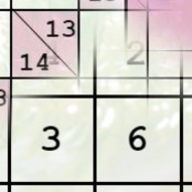

SUKARI Player runs as a fullscreen app.
Click on the button below to install Sukari to the home screen or App drawer.
If you don't see any button below, chances are that you already installed it!!
Happy puzzling!!
Add to home screen